Windows下VSCode编写C++配置
写在前面
参考：
可能有用：
个人问题
使用mingw-w64-install.exe安装报错
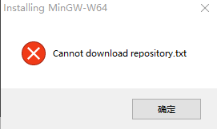
然后我使用了Cywin(setup-x86_64.exe)
开始配置
安装Visual Studio Code
安装插件
C/C++
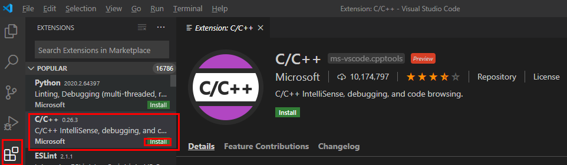
Coder Runner
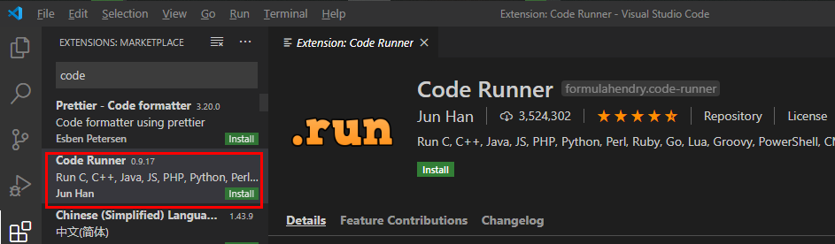
- 安装GCC（以Cywin为例）
- 选择下载资源
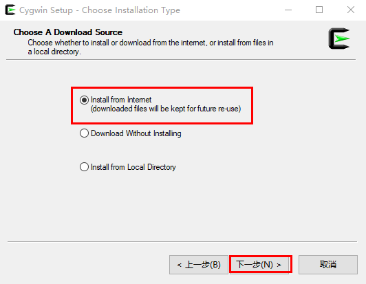 - 选择安装目录
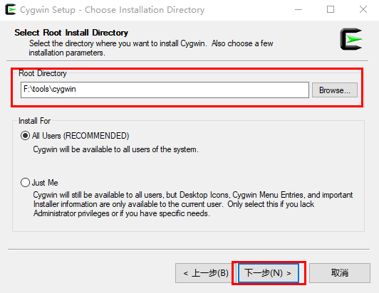 - 选择安装包下载目录
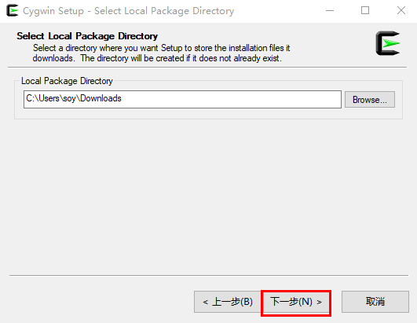 - 选择你的网络连接
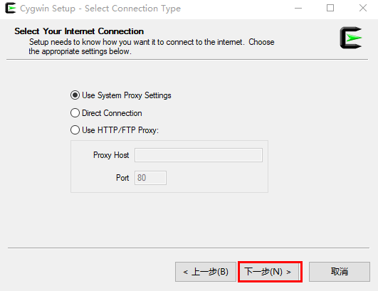 - 选择下载镜像
- 选择扩展包
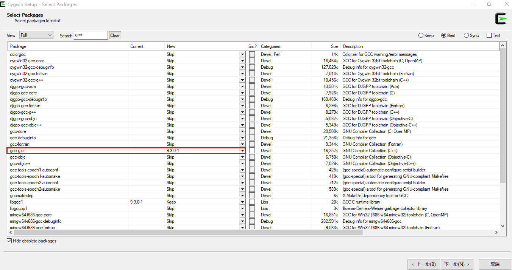
注意：必须勾选GCC
默认等待结束即可。
打开Cygwin64 Terminal检查gcc
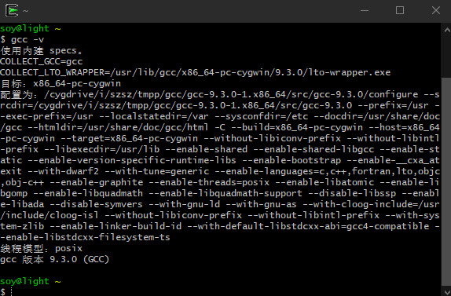
此时已经可以使用GCC编译器
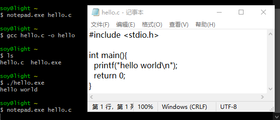
为了方便使用，添加到环境变量中。
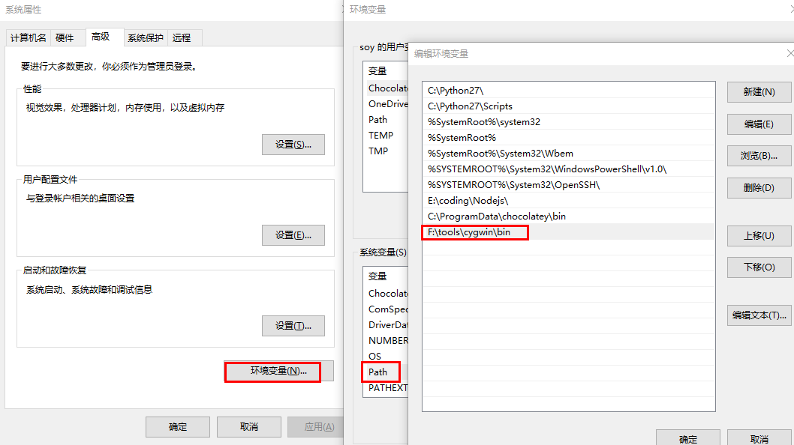
打开powershell检查
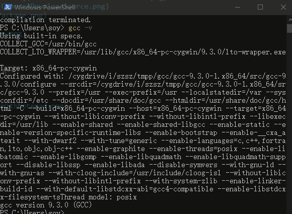
- 配置VSCode环境
File -> Preferences -> Settings -> settings.json
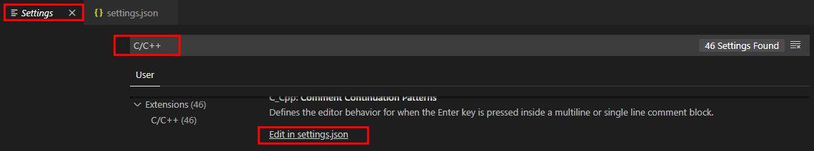
修改文件中command与 cwd，对应本机。
{
"version": "2.0.0",
"tasks": [
{
"type": "shell",
"label": "g++.exe build active file",
"command": "F:\\tools\\cygwin\\bin\\g++.exe",
"args": [
"-g",
"${file}",
"-o",
"${fileDirname}\\${fileBasenameNoExtension}.exe"
],
"options": {
"cwd": "F:\\tools\\cygwin\\bin"
},
"problemMatcher": [
"$gcc"
],
"group": {
"kind": "build",
"isDefault": true
}
}
]
}重启VSCode
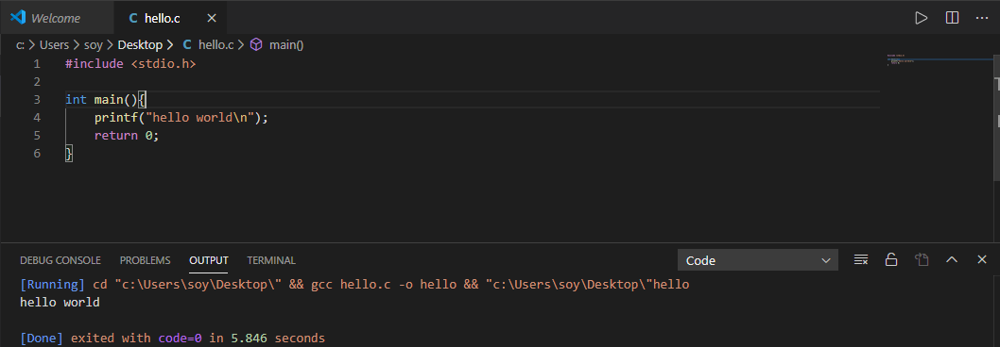
写在后面
VSCode本质上应该算是一个编辑器，根据个人需求添加相应插件可以成为顺手的IDE。
在Windows上使用VSCode最麻烦的在于编译器的配置，如果你是Linux，基本上能够做到开箱即用。
comment:
- Valine
- LiveRe
- ChangYan